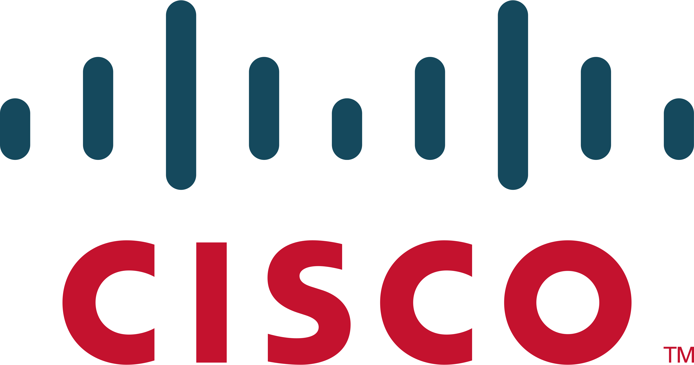

Empresas da area de tecnologia da informação
APPLE

É uma empresa multinacional norte-americana que tem o objetivo de projetar e comercializar produtos eletrônicos de consumo, software de computador e computadores pessoais. Os produtos de hardware mais conhecidos da empresa incluem a linha de computadores Macintosh, iPod, iPhone, iPad, Apple TV e o Apple Watch.
AMAZOM AWS

É a plataforma de computação em nuvem da Amazon, sendo a líder mundial do setor. Ela oferece mais de 200 serviços completos de data centers distribuídos globalmente, permitindo que empresas de todos os tamanhos — de startups a órgãos governamentais — aluguem infraestrutura tecnológica sob demanda
ADOBE

A Adobe Systems Incorporated é uma empresa americana de tecnologia que fornece software para a área de criação e design gráfico, edição de vídeo, web design e outras aplicações criativas. Fundada em 1982, a Adobe é conhecida por sua linha de produtos, que inclui o Photoshop, Illustrator, InDesign, Lightroom, Acrobat, Premiere Pro e After Effects. A empresa tem sede em San Jose, na Califórnia, e atua em todo o mundo, fornecendo soluções para empresas, agências governamentais e indivíduos.
CISCO

A Cisco Systems, Inc. é uma empresa americana de tecnologia de redes. Fundada em 1984, a Cisco é líder mundial em soluções de tecnologia de redes de computadores, fornecendo produtos e serviços que ajudam a conectar pessoas, informações e coisas. A empresa oferece uma ampla gama de soluções de rede, incluindo roteadores, switches, segurança de rede, gestão de rede e outros equipamentos e software. A Cisco também oferece serviços de consultoria e suporte para ajudar as empresas a implementar e gerenciar suas redes de computadores. A empresa tem sede em San Jose, na Califórnia, e atua em todo o mundo, fornecendo soluções para empresas de todos os tamanhos, agências governamentais e operadoras de serviços de comunicações.
DELL
A Dell Technologies é uma empresa americana de tecnologia da informação que oferece uma ampla gama de produtos e serviços, incluindo computadores, servidores, storage, soluções de nuvem, segurança cibernética, serviços de consultoria e suporte. Fundada em 1984 por Michael Dell, a empresa começou como uma venda direta de computadores pessoais e, desde então, evoluiu para uma empresa de tecnologia da informação completa, atendendo clientes em todo o mundo. A Dell é conhecida por seus produtos de alta qualidade, serviços de suporte excepcionais e soluções inovadoras que ajudam as empresas a alcançar seus objetivos de negócios. A empresa tem sede em Round Rock, Texas, e opera em todo o mundo, fornecendo soluções para empresas de todos os tamanhos, governos e instituições educacionais.
GOOGLE

A Google é uma empresa americana de tecnologia e serviços de internet. Fundada em 1998, a Google é conhecida por seu motor de busca na internet, que ajuda as pessoas a encontrar informações rapidamente e facilmente. Além disso, a empresa oferece uma ampla gama de produtos e serviços, incluindo o Gmail, o Google Maps, o Google Drive, o YouTube, o Google Assistant e muito mais. A Google também é líder em inteligência artificial e tecnologias avançadas, como o Google Cloud e o Google Workspace. A empresa tem sede em Mountain View, na Califórnia, e opera em todo o mundo, fornecendo soluções para empresas, governos, instituições educacionais e consumidores individuais.
INTEL
A Intel Corporation é uma empresa americana de tecnologia que projeta, desenvolve e fabrica microprocessadores e outros componentes para computadores, dispositivos móveis e outros equipamentos eletrônicos. Fundada em 1968, a Intel é considerada uma das maiores e mais inovadoras empresas de tecnologia do mundo. A empresa tem sede em Santa Clara, na Califórnia, e opera em todo o mundo, fornecendo soluções para fabricantes de computadores, fabricantes de dispositivos móveis, fabricantes de equipamentos eletrônicos e outros clientes corporativos. A Intel é conhecida por sua linha de microprocessadores Intel Core, que são amplamente utilizados em computadores de mesa, notebooks e outros equipamentos eletrônicos. Além disso, a empresa oferece uma ampla gama de soluções de tecnologia da informação, incluindo tecnologias de armazenamento, soluções de nuvem e soluções de segurança cibernética.
AMD
A Advanced Micro Devices, Inc. (AMD) é uma empresa americana de tecnologia que projeta, desenvolve e fabrica microprocessadores, gráficos e outros componentes para computadores, dispositivos móveis e outros equipamentos eletrônicos. Fundada em 1969, a AMD é uma das principais concorrentes da Intel no mercado de microprocessadores. A empresa tem sede em Santa Clara, na Califórnia, e opera em todo o mundo, fornecendo soluções para fabricantes de computadores, fabricantes de dispositivos móveis, fabricantes de equipamentos eletrônicos e outros clientes corporativos. A AMD é conhecida por sua linha de microprocessadores AMD Ryzen e sua tecnologia de gráficos AMD Radeon, que são amplamente utilizadas em computadores de mesa, notebooks e outros equipamentos eletrônicos. Além disso, a empresa oferece soluções de tecnologia da informação avançadas, incluindo soluções de computação em nuvem e soluções de inteligência artificial.
ORACLE

A Oracle Corporation é uma empresa americana de tecnologia que projeta, desenvolve e vende software de banco de dados, aplicativos empresariais e soluções de nuvem. Fundada em 1977, a Oracle é uma das maiores empresas de tecnologia do mundo, especializada em soluções para empresas. A empresa tem sede em Redwood City, na Califórnia, e opera em todo o mundo, fornecendo soluções para empresas de todos os tamanhos e setores, incluindo finanças, varejo, saúde, setor público e muito mais. A Oracle é conhecida por seu banco de dados relacional Oracle Database, que é amplamente utilizado por empresas e organizações em todo o mundo. Além disso, a empresa oferece uma ampla gama de soluções de aplicativos empresariais, incluindo soluções de gestão de relacionamento com o cliente (CRM), soluções de gerenciamento de recursos humanos (RH) e soluções de gerenciamento de supply chain.
MICROSOFT
A Microsoft é uma empresa multinacional de tecnologia sediada nos Estados Unidos que desenvolve, licencia e vende software, eletrônicos e serviços de computação em nuvem. Fundada em 1975 por Bill Gates e Paul Allen, a empresa é mais conhecida por seu sistema operacional Windows e pelo pacote de produtividade Microsoft Office. Além disso, a Microsoft também oferece serviços em nuvem como o Microsoft Azure, o serviço de jogos Xbox e o navegador Microsoft Edge. Atualmente, a Microsoft é uma das maiores empresas de tecnologia do mundo em termos de receita e valor de mercado.
SAP
A SAP é uma empresa multinacional de software de origem alemã que oferece soluções para gerenciamento de negócios e processos empresariais. Fundada em 1972, a empresa é mais conhecida por seu software de planejamento de recursos empresariais (ERP) chamado SAP ERP, que ajuda empresas a gerenciar atividades como finanças, vendas, produção e recursos humanos. Além do software ERP, a SAP oferece soluções para gerenciamento de cadeia de suprimentos, análise de dados, gerenciamento de relacionamento com clientes, entre outras. A SAP é atualmente uma das maiores empresas de software do mundo em termos de receita e emprega mais de 100.000 pessoas em todo o mundo.
NVIDIA

A NVIDIA é uma empresa multinacional de tecnologia sediada nos Estados Unidos que projeta e fabrica unidades de processamento gráfico (GPUs) e sistemas em chip (SoCs). Fundada em 1993, a NVIDIA é conhecida por suas GPUs usadas em jogos, computação científica e aplicativos de inteligência artificial (IA). A empresa também oferece soluções de computação em nuvem, incluindo o NVIDIA DGX, uma plataforma de IA avançada. A NVIDIA é uma das empresas líderes em tecnologia de GPUs e é amplamente considerada uma das empresas mais inovadoras do setor de tecnologia. A empresa emprega mais de 18.000 pessoas em todo o mundo.